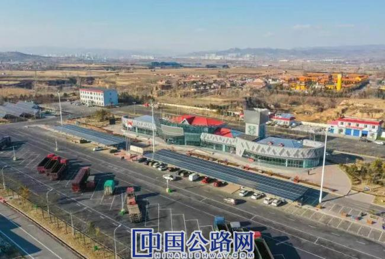

微官网
微官网
2020-12-24 山西交通

近日，山西交控集团所属实业集团太原分公司盂县服务区分布式光伏发电项目正式并网发电，标志着全省首例高速公路服务区分布式光伏发电项目建设成功，开启了分布式光伏发电项目在高速公路服务区领域应用的新纪元。
高速公路分布式光伏发电项目是以绿色发展为理念，充分利用高速公路匝道空地、服务区和收费站屋顶、部分停车区等空置资源，为高速公路运营提供更多低碳、绿色、环保的清洁能源。据悉，按照“交通+能源”发展清洁低碳路沿经济的思路，考虑到高速公路路网对绿色可再生能源的需求，缓解未来电动汽车飞速发展对服务区用电量带来的巨大负荷，山西交通实业集团本着降本增效、低碳环保的原则，将目光着眼于光伏新能源领域，积极开展沟通洽谈，与景能（太原）新能源公司达成合作共识并签订合作协议，联手打造装机总容量为395.28KW，年平均发电量约65.01万KWh，采用国内一流的组件设备，以“车棚光伏＋屋顶光伏＋地面光伏”相结合的模式进行建设，并通过380V的电压等级接入当地电网系统。项目将实现节能减排的环境收益，预计每年将减少标煤燃烧约195.23吨，同比实现减排二氧化碳约519.56吨、二氧化硫248.56千克、氮氧化物252.54千克、烟尘46.24千克，具有良好的环境效益，将对区域经济社会发展、能源结构改善和节能减排发挥积极作用，促进带动当地建材、交通运输、零售、设备器材等相关产业的发展。
这是山西交通实业集团在分布式光伏发电领域与其他企业开展的第一个合作试点项目，也是在开发利用路网闲置资源业务中的一次重要尝试。项目建设不仅解决了服务区车辆停放安全的问题，为司乘人员提供了更加舒适的服务体验，同时，也达到了储能降耗、绿色环保的目的，可谓实现了“双赢”。未来，山西交通实业集团将进一步挖掘高速公路闲置资源的开发和利用价值，并结合新基建，在绿色能源的综合利用和闲置资源的融合方面进行深度探索，通过新兴业务来提升高速公路服务区的整体价值，为企业布局新基建和绿色公路建设奠定基础。